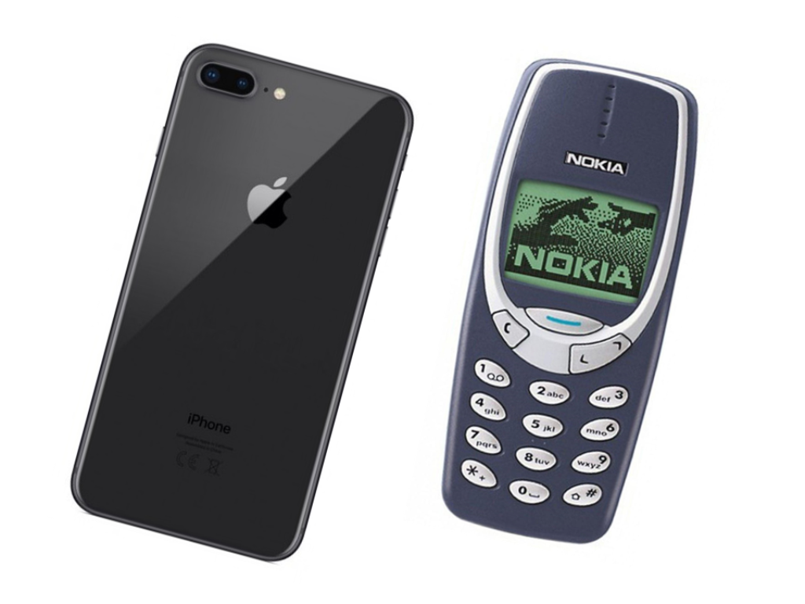

"Personally I think there is no need to worry too much about the fourth industrial revolution's changes. For example, my career or laws, it won't be affected too much. Yes, the AI can better memorise the laws, etc. But it cannot read or create empathy. Humans are the kinds of living being given with a sense of logic and empathy. You need logic with the laws, to judge a person. But to declare him a culprit, depends on the jury. People need to be convinced, and emotions could affect their judgement" said Ayikmert, an Oxford's student taking the degree of law.
Data Is the New Currency
Every day, billions of people are sharing online. They’re posting images, videos, and tweets. They’re sending text messages. They’re liking other people’s updates.
How are they doing this sharing? They’re using connected devices. And billions of people sharing translates to billions of devices with embedded sensors, sending trillions of real-time signals to the cloud. Things like GPS coordinates, environmental data, clickstreams, and health status.
The result? Data. Lots and lots of data.
All of this data is like food for artificial intelligence. AI is driving innovation across growing numbers of products and services, and the more data you have, the better the predictions get.
Machine learning algorithms can analyse these billions of transactions and variables to make businesses smarter. They can help businesses anticipate trends in consumer demands, personalise promotions for individual customers, and optimise pricing.
Here are a few examples of machine learning innovations, organised by industry:
-Retail: Highlight consumer sentiments toward a brand or predict which customers are mostly likely to purchase a particular product.
-Manufacturing: Optimise supply chain operations and predict the failure of machine parts.
-Travel: Plan vacations with the acumen of a human assistant.
-Medicine: Assist doctors in identifying different types of cancer cells and spotting intracranial abnormalities in real time.
Let’s dive in deeper, industry by industry, to help you understand how the new technologies of the Fourth Industrial Revolution are shaping the economy.
Transportation
In today’s times, do you need to own a car? Or can you simply share one?
Car-sharing services work across multiple industries—transportation, technology, insurance, finance—to provide a seamless customer experience from request to payment. In the process, they are disrupting the notion of car ownership.
What if you just need a ride? Services like Uber and Lyft have disrupted the transportation industry. With one of these services, you can use your phone to:
- Order a car to take you to a specific destination
- Track the vehicle as it heads your way
- Get information about the vehicle, driver, and price of the trip
- Pay for the ride and optionally, add a tip and feedback for the driver
Or if you want to own a car, why not own it instead as a service, so you don’t have access to just one car, but a whole fleet based on your needs? Need a coupe for the weekend? Change your car needs in the app, and Audi swaps it out for you. Car companies are looking hard at these models now.
Advances in artificial intelligence, the Internet of things, clean energy, and other technologies can improve safety for drivers and pedestrians and potentially lead to greater use of public transportation and car-sharing services. This shift can result in reduced congestion and pollution, faster and cheaper commutes, and improved health.
Retail
In retail, personalization is changing everything. The lines between sales, service, and marketing are blurring as experiences become more one-to-one, powered by artificial intelligence.
Virtual customer service agents can perform day-to-day transactions and make smart recommendations to customers. Machine learning algorithms can analyze billions of signals to route customer service calls to the most appropriate agent.
Using augmented reality devices, such as smart glasses or other wearables, shoppers can look at a product in a store and see relevant data pop up into their field of vision. With virtual reality picking up speed, can it be long before a shopper can virtually try on different outfits and buy the ones they like without ever leaving their bedroom? What kind of impact can a capability like this have on the postal service or on supply chains? What if you were able to 3D print your retail objects, such as clothes or glasses, at your neighborhood shop?
Right now, everything is designed around “shopping then shipping” (you order, and the goods are packaged up and sent to you). But AI and prediction technology is getting so good that soon, Amazon will know what you need before you need it. People are exploring the move to “shipping then shopping.” You receive the goods, and send back what you don’t want.
Finance
Financial institutions use artificial intelligence to detect fraud and research equities. They are even using insights from
machine learning to manage client relationships. For example, artificial intelligence helps financial advisors predict which
prospects are most valuable in the sales cycle, decide next-best actions, and create highly personalised customer journeys
based on the financial goals, life events, and other variables specific to each customer.
The banking industry is going through major change. Branches are disappearing, new competition is entering the industry
at a rapid pace. What will a bank look like in 10 years? Like Citi today, or Google?
Insurance
The insurance industry is looking at using data from wearable devices that monitor health, and sensors that track driving
habits to determine pricing and encourage safer habits for policyholders. People with better health or driving records pay
less for their policies. Sensors in cars can instantly alert drivers to any potential faults with their vehicles and insurance
companies to collision damage, allowing them to instantly contact the driver to begin the claims process.
Agriculture
AI-powered machine vision systems can measure crop populations and detect weeds or plant pests, and use robotic sprayers to
precisely apply herbicides. Bioengineered plants are leading to greater crop yields and new medicines, such as antimalarial
drugs produced from genetically modified tobacco plants.
Healthcare
Precision medicine helps doctors analyse a patient’s genome sequence, medical history, and lifestyle. That information,
coupled with demographic data from groups of people with similar conditions, as well as the latest research, helps doctors
create treatments and prevention therapies unique to an individual.
When Will the Future Arrive?
According to the World Economic Forum Technology Tipping Points and Societal Impact report, the following technology tipping points could occur by 2025:
-10% of people wearing clothes connected to the Internet
-The first robotic pharmacist in the US
-The first 3D-printed car in production
-5% of consumer products printed in 3D
-90% of the population with regular access to the Internet
-Driverless cars equaling 10% of all cars on US roads
-The first transplant of a 3D-printed liver
-Over 50% of Internet traffic to homes for appliances and devices
-The first city with more than 50,000 people and no traffic lights
-The first AI machine on a corporate board of directors
As you can see, there is nothing that we can do in the future without computers and digitalisations. And there are many compagnies and jobs which are failing, because they failed to read the trend of time. Even countries have failed, like Qing Dynasty which ignored the improvements of the first industrial revolution.
For a compagny, let's take example with Nokia. Why, this such a big enterprise, could have failed at one night?
 Well, first of all look at the image above, what would more likely attract your eyes? That's correct, the apple one ! Nokia's failure can be linked to several factors, including its inability to adapt to the changing landscape of the fourth
industrial revolution and the evolving preferences of consumers.
-Failure to Embrace Smartphones: Nokia initially dominated the mobile phone market with its feature phones. However,
the company failed to anticipate the shift towards smartphones, which became a significant aspect of the fourth industrial
revolution. The emergence of touchscreens, app ecosystems, and advanced mobile operating systems caught Nokia off guard.
-Lack of Innovation: Nokia struggled to innovate rapidly in the smartphone era. The fourth industrial revolution emphasizes the
integration of technology into every aspect of daily life, and Nokia fell behind in terms of introducing cutting-edge features
and designs. Competitors like Apple and Samsung capitalized on this trend, offering smartphones with superior functionality and
aesthetics.
-Ecosystem and App Store: The fourth industrial revolution is characterized by interconnected digital systems and ecosystems.
Apple and Android, with their respective app stores, created powerful ecosystems that kept users within their platforms.
Nokia's Symbian operating system couldn't compete in terms of the variety and quality of apps, leading to a decline in user
interest.
-Resistance to Change: Nokia's corporate culture and leadership were resistant to change. The fourth industrial revolution
encourages adaptability and agility, but Nokia was slow to shift its focus and strategies. The company was known for its
hardware expertise but struggled to integrate software effectively, a critical aspect in the smartphone era.
-Globalization and Market Dynamics: The fourth industrial revolution brought about increased globalization and connectivity.
Nokia, a Finnish company, faced challenges in understanding and adapting to diverse global markets. Cultural nuances and
varying consumer preferences played a role in the company's struggles to maintain its market share.
-Rapid Technological Advancements: The fourth industrial revolution is characterized by the rapid advancement of technology.
Nokia's inability to keep pace with evolving hardware and software technologies contributed to its downfall. While competitors
introduced new and improved features, Nokia's offerings became outdated.
-Shift in Consumer Preferences: As the fourth industrial revolution progressed, consumer preferences shifted towards sleeker,
more user-friendly devices with intuitive interfaces. Nokia's traditional focus on durability and battery life became less
relevant as consumers prioritized features like touchscreens, app ecosystems, and multimedia capabilities.
In summary, Nokia's failure is intricately linked to its inability to adapt to the changes brought about by the fourth
industrial revolution. The company's resistance to innovation, slow response to evolving technologies, and failure to meet
shifting consumer preferences ultimately led to its decline in the mobile phone market.
Here I am talking about only the third industrial revolution's change. Now think about the fourth industrial revolutions' AI.
Changes in Employment
Artificial intelligence (AI) is making our lives more productive, but it can also disrupt jobs, similar to past revolutions. Jobs will
change as AI automates tasks, but like the Internet did years ago, it will create new jobs and transform existing ones, particularly
those requiring creativity and complex problem-solving.
However, people with less education and fewer skills might face challenges in the evolving job market. To cope with these changes,
businesses and governments should prioritize training for future jobs. Lifelong learning and career adaptation will be crucial for the
workforce of the future.

SO, what have we learnt from here?